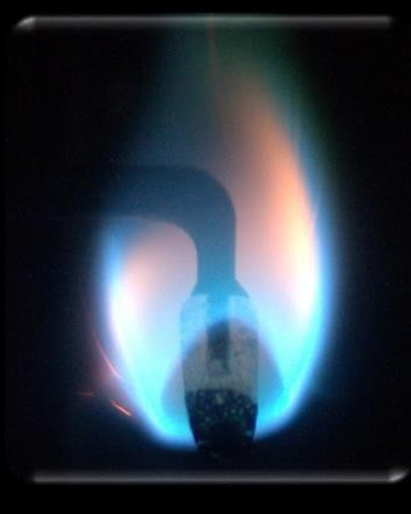

Explore

Investigations
All 24 NASA PSI investigations, with photos and data at a glance.
Open →
Simulation
Estimate whether a solid fuel keeps burning at Moon, Mars or Earth gravity. An estimate, not a prediction.
Open →
Presentation
The slides for our NASA Space Apps 2026 entry, with a PDF to download.
Open →Ignis AI
AI-assisted scoring of the investigations against your question.
Open →Photos are from NASA, credited where they appear. They show hardware and sessions, not results.
Our edge
- Every fact has a source
- Each investigation page links to its NASA PSI record. Each paper figure names the document it was cropped from, and Our sources lists every publication.
- Measured, estimated and AI-written stay apart
- Test results appear as NASA recorded them. The Simulation gives estimates with a range, and Ignis AI scores are labelled as interpretation.
- Built for readers short on time
- Each investigation opens to a short summary, charts picked for it, and the papers behind it, so you can judge it in a minute.